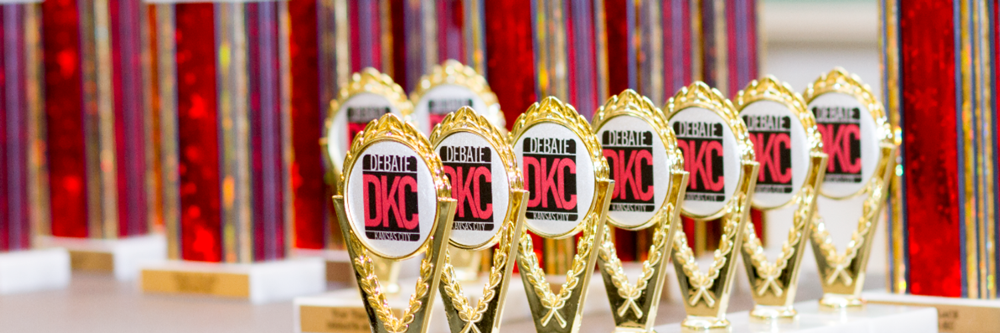

Home Section
Interested in Debate KC?
DEBATE-Kansas City is an Urban Debate League that provides middle and high school students debate workshops & tournaments, scholarships, resources, mentoring and general team support. DEBATE-Kansas City participants have achieved academic success and assumed leadership roles in high school, college and beyond. We encourage you to read through these materials to better understand the powerful impact that DEBATE-Kansas City can have on each student.
DKC supports students, coaches and members of the community in expanding their horizons through critical thinking and argument. Since 1998, DKC has provided thousands of students the opportunity to learn and grow by participating in academic debate. DEBATE-Kansas City has served 852 active participants this season.
One unique aspect of the DKC program is how it serves students from sixth grade to college graduation. A student can literally grow up with DKC. In addition to its regular middle and high school services, DKC provides opportunities for local college students to act as mentors to DKC students via our coaching connections program. These mentoring partnerships include UMKC, KU, Johnson County Community College, and Kansas City Kansas Community College. DKC is also instrumental in connecting our students to scholarships and college opportunities across the country.
About Us
Our History
DEBATE-Kansas City was conceived in 1998 as part of a national movement to get debate back into urban schools, which was ironically fueled by the collapse of democracy in the former Soviet Union. When the Iron Curtain fell, the Open Society Institute (OSI) of New York was inspired to fund debate and democracy training in Eastern Europe. American supporters of debate used this moment to highlight the need for debate programs in America’s urban schools. Kansas City was one of several locations to receive a three-year grant from the (OSI) to start an Urban Debate League (UDL). The grant created a partnership between the University of Missouri–Kansas City (UMKC) and local urban school districts to revive debate. DKC was given staff and resources to deliver debate related-services and manage the competitive league at no cost to seven urban schools. After the grant expired, participating school districts valued the program enough to fund its continuance; member schools began contributing annual service fees to retain DEBATE-Kansas City services. In 2003, to increase financial flexibility, DKC became an independent 501(c)(3) non-profit corporation. However, program services were kept at UMKC through a mutually beneficial and highly successful partnership; from 2003 to 2010 DKC grew from 13 to 40 member schools.
Read MoreStudent Information & Resources
DEBATE-Kansas City has provided debate services to over 12,000 students since 1998. DKC offers middle and high school students the opportunity to compete in policy debate and student congress.
Debate Events
Mock Trial
Mock Trial is not only an excellent opportunity to develop public speaking and persuasion skills, it is also a unique opportunity to expose students to the United States Legal system, and the inner workings of the courtroom. Participating in Mock Trial also promotes collaborative working skills and improve critical thinking and analysis. By partnering with UMKC’s Mock Trial Team, we at DEBATE-KC hope to encourage students to pursue a career in the legal field, by providing networking opportunities with practicing attorneys, all while engaging in an activity that make college applications stand out! After completing this program, students will not only have exposure to the legal process, but a first-hand look at college life, and a road-map to academic success after high school!
Policy Debate
Policy debate in high school is a transformative experience that hones critical skills and deepens understanding of current affairs and public policy. Students engage in rigorous research and construct arguments within a structured format, sharpening their analytical and public speaking abilities. This collaborative activity fosters teamwork and leadership as students work together to develop strategies and refine their communication skills. Partnering with mentors at DEBATE-Kansas City provides students with guidance and exposure to career paths in law, public policy, and academia. Policy debate not only prepares students for competitive success but also equips them with confidence, leadership, and the ability to navigate complex issues. It's a pathway to academic success and personal growth, offering a platform for students to explore societal challenges and contribute meaningfully to civic discourse.
Student Congress
Student Congress in high school immerses students in legislative simulation, mirroring the United States Congress. They research and debate proposed legislation on current issues, mastering parliamentary procedures and persuasive argumentation. This activity fosters critical thinking and civic engagement as students navigate diverse viewpoints and propose solutions to real-world challenges. Collaboration and leadership are central as students negotiate, advocate, and seek consensus. Partnering with mentors from DEBATE-Kansas City, students gain insights into legislative processes and potential careers in law, politics, or public service. Student Congress prepares students for academic success while nurturing informed, active citizenship and a commitment to making positive impacts in their communities.
Contact Section
Interested in learning more about the Urban Debate Leauge of KC? We would love to hear your feedback. Being in touch with our community is priority number one. Please reach out to us by emailing: debatekc@gmail.com